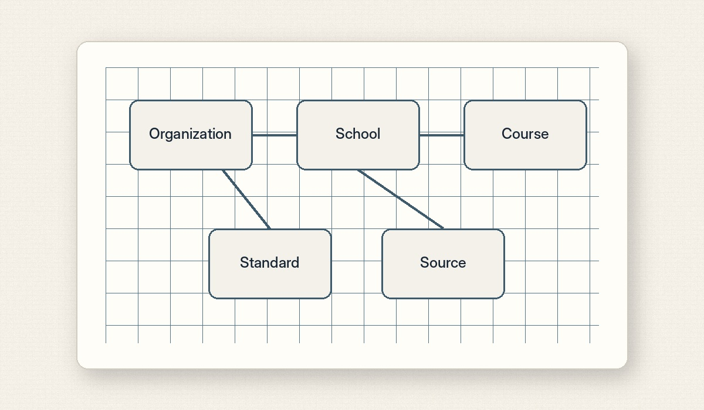
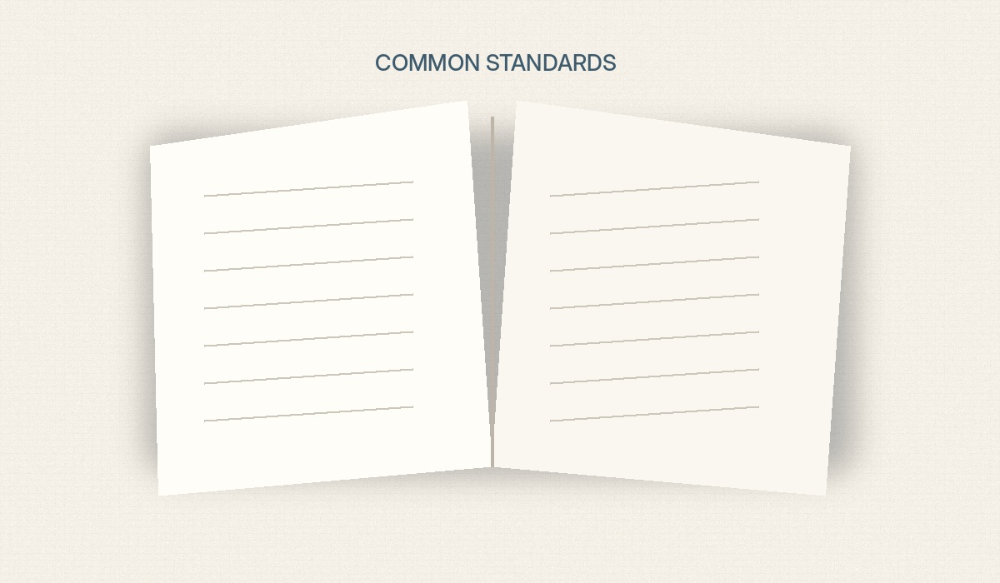
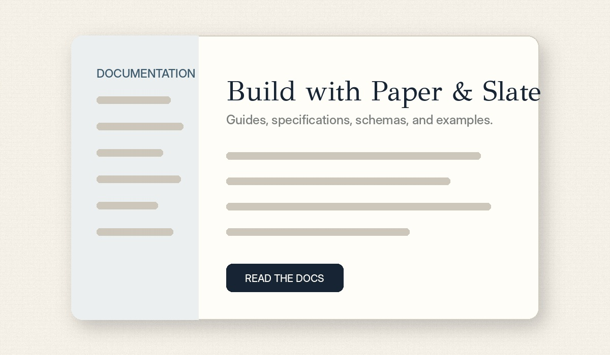

Open project
File System
Human-readable educational documents and reusable content blocks.
Paper & Slate builds open standards, formats, schemas, and tools that help education software and schools work together—for everyone.

Each project solves a focused interoperability problem while sharing one set of principles, governance, and documentation.
View all projects →Human-readable educational documents and reusable content blocks.

A standard discovery location for school and district information.

Structured data for schools, districts, and educational organizations.

A common representation for standards, frameworks, and alignments.

Course offerings, programs, pathways, and academic structures.

Validators, CLIs, schemas, and implementation libraries.
Specifications, decisions, and implementations are public and reusable.
Standards serve the education ecosystem rather than a single platform.
Practical needs of educators and institutions shape every project.
An open foundation for the common infrastructure education software and schools have been missing.
The first proposal defines how projects progress from experimental to stable.

A unified documentation experience assembled from each project repository.